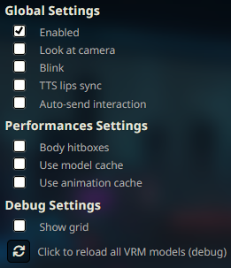
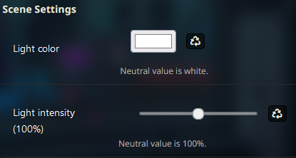
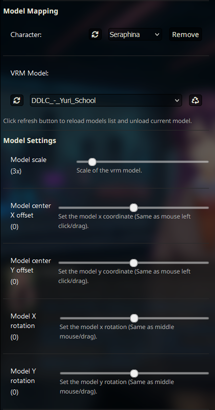
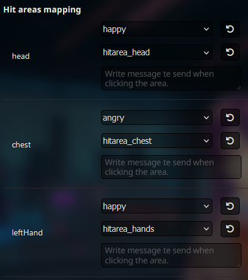
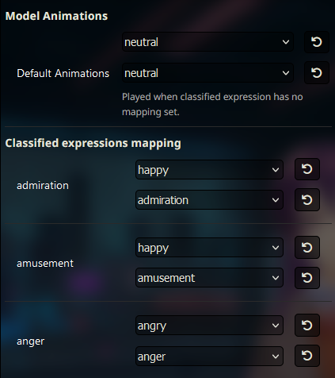

VRM
本指南将引导你完成为 SillyTavern 设置和自定义 VRM 扩展的过程。此扩展允许你为角色使用 VRM 动画模型，为虚拟角色提供动态和互动元素。
前提条件
开始之前，请确保满足以下前提条件：
-
版本选择：确保你使用的是 SillyTavern 的最新版本分支，以访问最新功能和更新。
-
扩展安装：从扩展面板（堆叠方块图标）的"下载扩展和资源"菜单中安装"VRM"扩展。
-
模型文件放置：将你的 VRM 模型文件（.vrm）放入
/data/<user-handle>/assets/vrm/model目录，将动画文件放入/data/<user-handle>/assets/vrm/animation目录。目前支持的动画文件格式为 .fbx 和 .bvh，且需与 VRM 模型兼容。这包括从 Mixamo（https://www.mixamo.com/）获取的任何动画，以及从 XR Animator（https://github.com/ButzYung/SystemAnimatorOnline）等工具导出的任何动画。
扩展设置
VRM 扩展提供多种设置，用于自定义动画模型的行为。以下是主要设置：

全局设置
-
启用：
- 勾选此复选框以激活扩展，允许 VRM 模型在 SillyTavern 中进行交互。
- 如果你只想使用普通立绘，可以禁用此扩展。
-
注视摄像机：
- 勾选此复选框，使 VRM 模型的眼睛注视摄像机。
-
眨眼：
- 勾选此复选框，使 VRM 模型的眼睛以随机间隔眨眼。模型表情应正确定义眨眼的权重属性，否则模型可能会在闭眼时眨眼等异常情况。如果出现这种情况，可以：
- 如果你有 .vroid 文件，修正模型
- 不使用该错误面部表情
- 通过此复选框完全禁用眨眼
-
TTS 口型同步：
- 勾选此复选框，使 VRM 嘴型随 TTS 播放的声音同步运动。仅适用于由 SillyTavern 本身播放声音的 TTS（例如非流式模式的 XTTS）。如果禁用，收到新角色消息时，嘴型将根据消息文本长度进行动画。
-
自动发送交互：
- 勾选此复选框，在点击具有映射消息的区域时自动触发角色交互（详见碰撞区域部分）。
性能设置
-
身体碰撞箱：
- 勾选此复选框，启用对 VRM 模型多个部位点击的检测。根据模型不同，可检测的区域包括：头部/胸部/手部/腹股沟/臀部/腿部/足部。碰撞箱位置在每一帧计算并跟随身体动画，禁用此选项可提升性能。
-
使用模型缓存：
- 勾选此复选框，在切换模型时将 VRM 模型保留在内存中，以便更快地切换回之前的模型。适合为同一角色使用不同模型以更换服装或形态等场景。可能影响性能。
-
使用动画缓存：
- 勾选此复选框，将本次会话中播放的所有动画保留在内存中。分配给模型的所有动画也将在模型首次出现时加载。会增加首次加载模型的时间，但使所有动画切换变为即时。可能影响性能。
调试设置
-
显示网格：
- 勾选此复选框，可视化 3D 网格、模型拖动框和身体碰撞箱。
-
重载按钮：
- 点击此按钮重载 3D 场景，清除缓存和所有 VRM 模型。如果出现错误或缓存开始影响性能时使用。
场景设置

-
光源颜色：
- 设置 3D 场景中光源的颜色。点击重置按钮可恢复默认白色。根据你的浏览器，你可以使用颜色选取器，例如可以拾取背景图片的颜色以增加沉浸感。
-
光源强度：
- 使用滑块以百分比设置光源强度。点击重置按钮可恢复默认值 100%。VRM 模型对光源的反应因模型中烘焙的着色器而异，请调整数值并观察效果。

角色选择
这些设置允许你管理角色并为其分配 VRM 模型。
-
刷新按钮：
- 点击刷新按钮可更新当前聊天中的角色列表。
-
选择角色：
- 使用下拉列表选择要分配 VRM 模型的角色。
-
移除按钮：
- 点击此按钮删除为某个角色分配的模型。
模型选择
-
刷新按钮：
- 如果你的 VRM 模型未出现在列表中，点击刷新按钮。
-
选择模型：
- 从列表中选择要分配给所选角色的模型。
- 模型必须位于
/data/<user-handle>/assets/vrm/model目录中。
-
重置按钮：
- 点击此按钮将模型设置重置为默认值。如果你有与默认值对应的动画文件，它们将被自动映射。详见本文末尾的命名映射说明。
模型设置
-
模型缩放：
- 使用滑块调整模型大小，使其变大或变小。
-
模型中心 X/Y 偏移：
- 使用这些滑块改变模型相对于窗口中心的水平/垂直位置。
-
模型 X/Y 旋转：
- 使用这些滑块改变模型相对于模型臀部的水平/垂直旋转。
备注
- 设置保存在每个模型下，而非每个角色下，并跨不同聊天保留。
- 如果你希望为两个不同的角色使用同一模型但设置不同，请复制 .vrm 文件。
- 你也可以用鼠标拖动模型，这些设置将被更新并保存。左键点击并按住以拖动模型。中键点击并按住以旋转模型，或使用 Shift+左键点击。在模型上使用鼠标滚轮可缩放模型，或使用 Ctrl+左键点击。
- 如果模型超出视野范围，可使用这些 UI 设置将其拉回屏幕。同时，勾选"显示框架"复选框可清楚地看到拖动模型的可点击区域。
碰撞箱映射
- 根据模型骨骼定义，可以生成某些碰撞箱区域。这些区域将列在 UI 的此部分中，你可以为每个区域分配一个表情/动画/消息，当点击该区域时将触发。
分类表情映射
-
要求：
- 需要使用分类表情扩展，否则将回退到默认动画。
-
映射：
- 对于分类扩展检测到的每种情绪，你可以分配一个表情/动作/消息。消息可以包含命令。
命令
- /vrmlightcolor：
- 设置光源颜色
- 参数：颜色
- 示例："/vrmlightcolor white" 或 "/vrmlightcolor purple"
- /vrmlightintensity：
- 以百分比设置光源强度
- 参数：强度
- 示例："/vrmlightintensity 0" 或 "/vrmlightintensity 100"
- /vrmmodel：
- 为角色分配 VRM 模型
- 参数：角色，模型
- 示例：单人聊天中使用 "/vrmmodel Seraphina.vrm"，群聊中使用 "/vrmmodel character=Seraphina model=Seraphina.vrm"
- /vrmexpression：
- 更改模型的表情
- 参数：角色，表情
- 示例：单人聊天中使用 "/vrmexpression happy"，群聊中使用 "/vrmexpression character=Seraphina expression=happy"
- /vrmmotion：
- 更改模型的动画
- 参数：角色，动作，循环，随机
- 示例："/vrmmotion idle" 或 "/vrmmotion character=Seraphina motion=idle loop=true random=false"
动画默认映射
如果你的动画文件按以下方式命名，在重置模型设置时将被自动映射。例如，名为 "assets/vrm/animation/neutral.bvh" 和 "assets/vrm/animation/neutral1.fbx" 的文件将被自动映射为默认和 neutral 分类动画的一个组。碰撞箱同理。
// 回退
"default": "assets/vrm/animation/neutral",
// 分类类别
"admiration": "assets/vrm/animation/admiration",
"amusement": "assets/vrm/animation/amusement",
"anger": "assets/vrm/animation/anger",
"annoyance": "assets/vrm/animation/annoyance",
"approval": "assets/vrm/animation/approval",
"caring": "assets/vrm/animation/caring",
"confusion": "assets/vrm/animation/confusion",
"curiosity": "assets/vrm/animation/curiosity",
"desire": "assets/vrm/animation/desire",
"disappointment": "assets/vrm/animation/disappointment",
"disapproval": "assets/vrm/animation/disapproval",
"disgust": "assets/vrm/animation/disgust",
"embarrassment": "assets/vrm/animation/embarrassment",
"excitement": "assets/vrm/animation/excitement",
"fear": "assets/vrm/animation/fear",
"gratitude": "assets/vrm/animation/gratitude",
"grief": "assets/vrm/animation/grief",
"joy": "assets/vrm/animation/joy",
"love": "assets/vrm/animation/love",
"nervousness": "assets/vrm/animation/nervousness",
"neutral": "assets/vrm/animation/neutral",
"optimism": "assets/vrm/animation/optimism",
"pride": "assets/vrm/animation/pride",
"realization": "assets/vrm/animation/realization",
"relief": "assets/vrm/animation/relief",
"remorse": "assets/vrm/animation/remorse",
"sadness": "assets/vrm/animation/sadness",
"surprise": "assets/vrm/animation/surprise",
// 碰撞箱
"head": "assets/vrm/animation/hitarea_head",
"chest": "assets/vrm/animation/hitarea_chest",
"groin": "assets/vrm/animation/hitarea_groin",
"butt": "assets/vrm/animation/hitarea_butt",
"leftHand": "assets/vrm/animation/hitarea_hands",
"rightHand": "assets/vrm/animation/hitarea_hands",
"leftLeg": "assets/vrm/animation/hitarea_leg",
"rightLeg": "assets/vrm/animation/hitarea_leg",
"rightFoot": "assets/vrm/animation/hitarea_foot",
"leftFoot": "assets/vrm/animation/hitarea_foot"感谢你阅读本指南！你的 SillyTavern 体验现已通过动画和互动 3D 模型得到丰富。
备注
- 此扩展加载的是 .vrm 文件，而非 .vroid 文件。
- 动画文件应与 VRM 兼容，你可以使用 XR animation（https://github.com/ButzYung/SystemAnimatorOnline）等工具转换 fbx/bvh 动画文件。
- 你可以通过将同名但结尾数字不同的文件放在一起来创建动画组，例如："idle1.bvh"、"idle2.bvh"、"idle3.bvh" 将被视为一个名为"idle"的组，在映射中选择该组时，触发时将随机播放其中一个，可用于增加动画的多样性。
- 你可以从此仓库获取精选动画：https://github.com/test157t/VRM-Animations-Pack-For-Silly-Tavern
- Nitral 有一些关于如何使用此扩展和动画仓库的教程视频：https://www.youtube.com/@nitralai